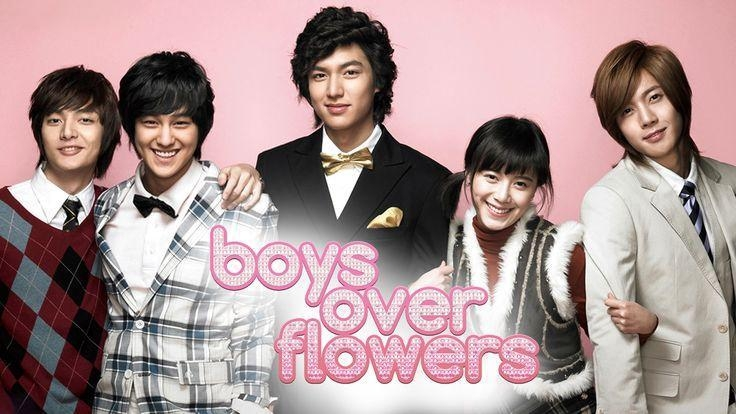

Boys Over Flowers
Promedió más del 28% de rating televisivo en su estreno de 2009 y dominó la pantalla en más de 20 países por 12 semanas. Años después, tras su llegada a Netflix, la serie revalidó su vigencia histórica al escalar hasta el tercer lugar del Top 10 global de la plataforma, superando a producciones modernas y manteniéndose por años como el principal referente de catálogo del género en el streaming.

El Juego del Calamar
Se convirtió en un fenómeno histórico tras acumular más de 1.650 millones de horas vistas en sus primeros 28 días en Netflix. La serie se mantuvo durante 11 semanas consecutivas en el Top 10 global de la plataforma, liderando el ranking de audiencia en 94 países simultáneamente, lo que incluyó los primeros puestos en toda Latinoamérica, Norteamérica, Europa y Asia.
La Corona Perfecta
Se posicionó en el Top 10 global de Disney+ desde su estreno, acumulando más de 43 millones de horas vistas en sus primeros 28 días y convirtiéndose en el K-drama con mayor expansión en la historia de la plataforma. La serie se mantuvo en los rankings por varias semanas y fue tendencia en más de 40 países, alcanzando el Top 5 en gran parte de Latinoamérica (incluyendo a Bolivia, Brasil, Perú y Venezuela) y liderando la audiencia en mercados clave de Asia, Europa y Norteamérica.

Crecimiento global
Los dramas producidos en Corea del Sur se conocen formalmente como hanguk deurama (한국 드라마) y popularmente como K-dramas. Su expansión forma parte de la Ola Coreana o Hallyu. La Hallyu 1.0 surgió a fines de los años noventa con la exportación de dramas como Winter Sonata, impulsada por las políticas culturales implementadas tras la crisis financiera de 1997. A mediados de los 2000 comenzó la Hallyu 2.0, marcada por la expansión internacional del K-Pop y el uso de plataformas digitales como YouTube y Facebook. Grupos como TVXQ, Super Junior, Girls' Generation y Big Bang lideraron esta etapa, cuyo punto más visible fue Gangnam Style de Psy en 2012. Desde 2013, la Hallyu 3.0 diversificó la presencia global de Corea del Sur hacia ámbitos como la gastronomía, la cosmética y el turismo. Durante este período, BTS amplió el alcance internacional de la cultura coreana, mientras las redes sociales fortalecieron el papel de los fanáticos en la difusión de contenidos. La Hallyu 4.0 se consolidó en la década de 2020 con el auge del streaming y el consumo digital global. La pandemia aceleró este proceso y producciones como Squid Game demostraron que las barreras idiomáticas ya no eran un obstáculo para alcanzar audiencias masivas. Con el crecimiento de la Hallyu, los dramas coreanos llegaron a nuevos públicos alrededor del mundo. En este proceso, las plataformas de streaming desempeñaron un papel fundamental.
Streaming
La internacionalización de los K-dramas se aceleró con la expansión de las plataformas de streaming. Servicios especializados como Rakuten o Viki y plataformas globales como Netflix, Disney+ y Prime Video facilitaron el acceso a series coreanas para audiencias de todo el mundo mediante subtítulos en múltiples idiomas y estrenos simultáneos.
En un comienzo, estas plataformas actuaron principalmente como distribuidoras, incorporando producciones realizadas por cadenas de televisión y estudios surcoreanos a sus catálogos internacionales. Esto permitió que títulos que antes circulaban principalmente en Asia llegaran a nuevos mercados.
Con el aumento de la demanda, algunas plataformas comenzaron también a producir contenido propio. Netflix destacó en este proceso al invertir directamente en series coreanas originales y coproducciones, consolidándose como uno de los principales impulsores de la expansión global de los K-dramas durante la década de 2020.
Sin embargo, el despliegue de las grandes plataformas globales no ha eclipsado a la industria local. A pesar del creciente interés de los gigantes del streaming por financiar sus propios títulos, las empresas surcoreanas siguen llevando la delantera y lideran la producción del ecosistema de los K-dramas.
K-Dramas en Chile
Tras la expansión global de la Ola Coreana y la consolidación de las plataformas de streaming, el fenómeno se empezó a reflejar en el consumo habitual de los chilenos. Las búsquedas relacionadas con K-Dramas, K-Pop, BTS y la comida coreana muestran que el interés por la cultura surcoreana ha crecido de forma sostenida durante los últimos años y que no se limita únicamente a las series, sino que abarca los distintos conceptos asociados al Hallyu.
Los datos de Google Trends evidencian que los términos como "K-Drama", "Coreano" (idioma), “Manhwa” y "BTS" mantienen una presencia constante entre las búsquedas de los usuarios chilenos. Mientras que BTS y el K-Pop concentran mayores niveles de popularidad, otros conceptos vinculados al idioma, la gastronomía y los dramas también muestran una evolución positiva que permite observar cómo el interés por la cultura surcoreana se ha diversificado con el paso de los años.
Uno de los primeros hallazgos es que, desde los registros iniciales disponibles en Google Trends, correspondientes a 2004, ya aparecen búsquedas relacionadas con el término "Coreano", en referencia al idioma.Esto resulta significativo porque demuestra que existía un interés temprano por Corea del Sur incluso antes del auge global del K-Pop o de la expansión masiva de las plataformas de streaming. Términos como "K-Drama" o "Manhwa" comienzan a adquirir mayor presencia varios años después, acompañando las distintas etapas del Hallyu.
A partir de la segunda mitad de la década de 2010 y durante 2020, las búsquedas experimentan un crecimiento mucho más pronunciado. Este comportamiento coincide con los procesos mencionados anteriormente: la consolidación de plataformas de streaming como distribuidoras y productoras de contenido coreano, la internacionalización de grupos como BTS y el aumento del consumo de entretenimiento digital durante la pandemia de COVID-19. Los datos muestran cómo distintos productos culturales coreanos comenzaron a reforzarse mutuamente, ampliando el alcance del Hallyu en Chile.
El gráfico presenta el interés a lo largo del tiempo utilizando el índice de Google Trends, con una escala relativa entre 0 y 100, donde 100 corresponde al momento de mayor popularidad registrado entre todos los términos comparados. En esta visualización, ese valor máximo corresponde a BTS, que alcanza un índice de 100 en abril de 2026. Este aumento coincide con el lanzamiento de su álbum Arirang, concentrando un alto volumen de búsquedas en Chile y evidencia la capacidad del grupo como un fenómeno global. Este comportamiento refleja cómo el K-Pop continúa funcionando como una de las principales puertas de entrada hacia otros productos de la cultura surcoreana. Los demás términos se interpretan de manera proporcional respecto de ese máximo. Por ejemplo, "Drama coreano" alcanza su mayor nivel de interés en agosto de 2012 con un índice de 36, lo que indica que su popularidad equivalía al 36% del mayor nivel de interés registrado dentro de la comparación.
Este creciente interés también se refleja en el consumo de producciones audiovisuales. En este contexto, los K-Dramas han logrado posicionarse como una alternativa competitiva dentro del mercado global del entretenimiento. Al comparar la evolución del interés de búsqueda de las series El Juego del Calamar, True Beauty y Propuesta Laboral con producciones occidentales como Game of Thrones, Euphoria y The Mandalorian, se observa que los K-Dramas ya no ocupan un espacio de nicho dentro del mercado audiovisual chileno, sino que compiten por la atención del público con algunas de las series más exitosas de la industria occidental.
La visualización muestra la evolución mensual del interés relativo entre 2020 y 2026. Se puede observar cómo las posiciones cambian de acuerdo con los estrenos de cada serie y la intensidad de las búsquedas registradas por Google Trends. Durante la mayor parte del período, las producciones occidentales mantienen una presencia constante; sin embargo, la irrupción de El Juego del Calamar marca un punto de inflexión. En octubre de 2021 la serie alcanza el valor máximo de la comparación (100), superando ampliamente a los títulos occidentales consolidados.
Otro hallazgo relevante es que el liderazgo de El Juego del Calamar no responde solamente a su estreno. Su presencia vuelve a ser alta en distintos momentos, lo que demuestra que la serie logró mantenerse vigente más allá del lanzamiento. Del mismo modo, True Beauty y Propuesta Laboral, aunque registran niveles de búsqueda menores, alcanzan búsquedas importantes durante sus estrenos y consiguen posicionarse por sobre algunas producciones occidentales. Esto refleja que los K-Dramas comenzaron a formar parte de las conversaciones habituales del público chileno.
Los datos sugieren que Corea del Sur ha logrado posicionarse como uno de los principales referentes de la industria audiovisual actual, y que Chile forma parte de esta transformación cultural donde los K-Dramas ya no representan algo pasajero, sino que son una alternativa estable dentro de las preferencias de las audiencias.
Mientras las redes sociales fortalecieron el papel de los fanáticos en la difusión de contenidos. Hoy, esa red de fanáticos sostiene una conversación global imparable, donde un solo mensaje puede resumir el impacto cultural de toda una industria: